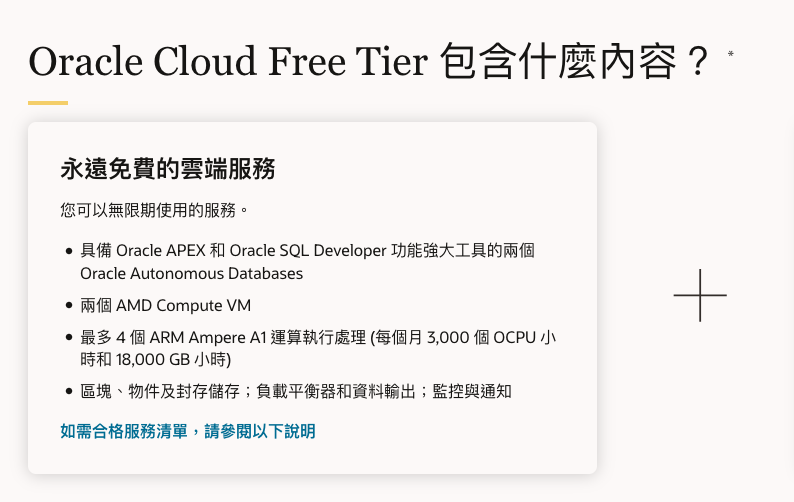
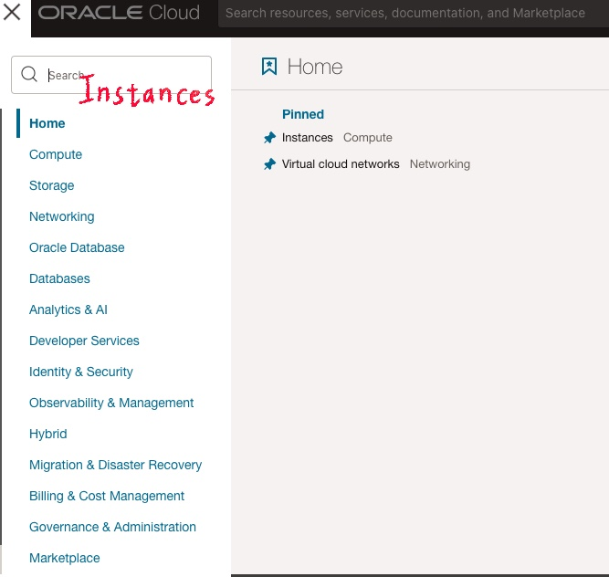
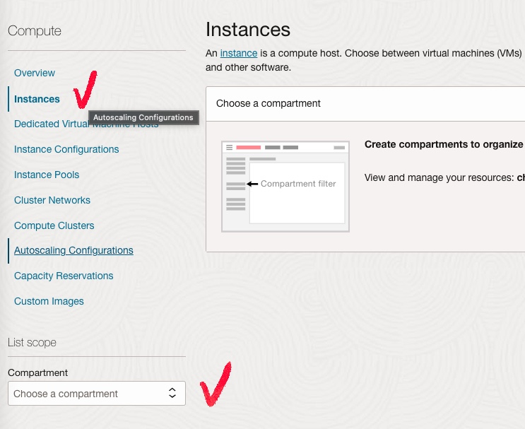
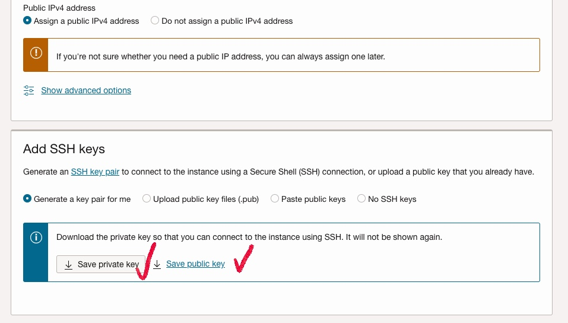
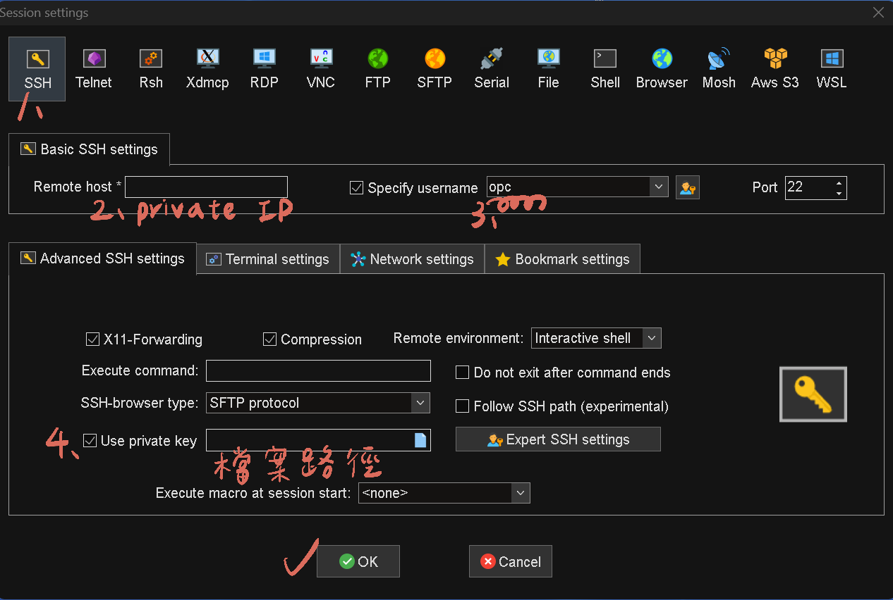

Oracle cloud
![[Oracle Cloud]透過免費機器Compute開關資料庫(Base Database Service)](https://nahcy3224.github.io/images/post/start-stop-node/startnode.png)
[Oracle Cloud]透過免費機器Compute開關資料庫(Base Database Service)
Base Database Service 前身被稱為 DataBase Cloud Service ， 就是在Oracle Cloud 上建立一服務。
這個服務是提供一虛擬機，虛擬機上有裝好的Oracle資料庫。
透過開關 Oracle Base DataBase Service 的 node 可以減少資料庫的費用。
所以我們可以透過在Oracle Cloud 上的免費資源建立排程，透過排程的API去開關 node。
Oracle Cloud 提供免費VM
永久免費的雲端服務的資訊
Oracle Cloud 提供兩個 AMD Compute VM，可以在這篇文章派上用場。

進入正題，我假設已經有一OCI帳號及一Base Database Service，以下開始建立一VM然後設置一API開關資料庫。
1 . 建立一個免費的VM
登入帳號後，在左上角選單下，搜尋Instances。

切換到Instances，選擇Compartment。


下載私鑰 （private key）和公鑰（public key），公鑰可生成不同檔案格式的私鑰。

接下來我們要透過ssh方式登入VM，
2 . 登入VM
透過新手友善 MobaXterm 登入VM
IP 打上 Private IP ，帳號輸入 opc

3 . 設定API
可直接複製此連結 oci-curl.sh檔案
將以下tenancyId、authUserId、keyFingerprint、privateKeyPath 改成
tenancyId="ocid1.tenancy.oc1..ocid1.privateip.oc1.phx.abyhqljREPLACETHISWITHYOUROCIDSa";
authUserId="ocid1.user.oc1..aaaaaaaaky3iyt7oqbdolpppdnqfbbarbREPLACETHISWITHYOUROCIDSvwq";
keyFingerprint="b0:77:5f:39:37:36:e2:dc:98:d2:00:00:00:00:00:00";
privateKeyPath="/config/failover/oci_api_key.pem";